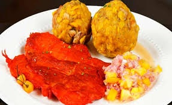
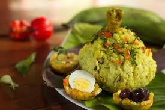

Comidas de selva
Inchicapi

- Base de ingredientes amazónicos: Utiliza productos típicos de la selva como la yuca, el maíz mote y el huacatay, que le aportan su identidad única.
- Textura cremosa y espesa: Gracias al maní molido y la yuca, la sopa tiene una consistencia densa y reconfortante.
- Sabor fresco y aromático: Las hierbas amazónicas, especialmente el huacatay, ofrecen un aroma fresco y un sabor característico que distingue al inchicapi de otros caldos o sopas peruanas.
Juane

- Envuelto en hoja de bijao: La hoja le aporta un aroma especial y mantiene el contenido jugoso y firme durante la cocción al vapor.
- Mezcla de ingredientes variados: Combina arroz, pollo, huevo duro, aceitunas y especias que dan un sabor sabroso y complejo.
- Plato tradicional y festivo: Es un símbolo de la identidad amazónica, preparado especialmente en festividades y ocasiones especiales.
Tacacho con secina

- Base de plátano macho: El tacacho se hace con plátano verde cocido y machacado, aportando una textura suave y un sabor ligeramente dulce y terroso.
- Cecina ahumada y salada: La carne de cerdo curada y ahumada complementa el tacacho con un sabor intenso, salado y ahumado que contrasta con la suavidad del plátano.
- Plato tradicional amazónico: Es un plato típico y muy representativo de la cultura culinaria de la selva peruana, especialmente popular en regiones como San Martín y Loreto.
- Salsa cítrica y picante: La salsa suele ser a base de limón o lima y ají amarillo o rocoto, que aporta un toque picante pero equilibrado.